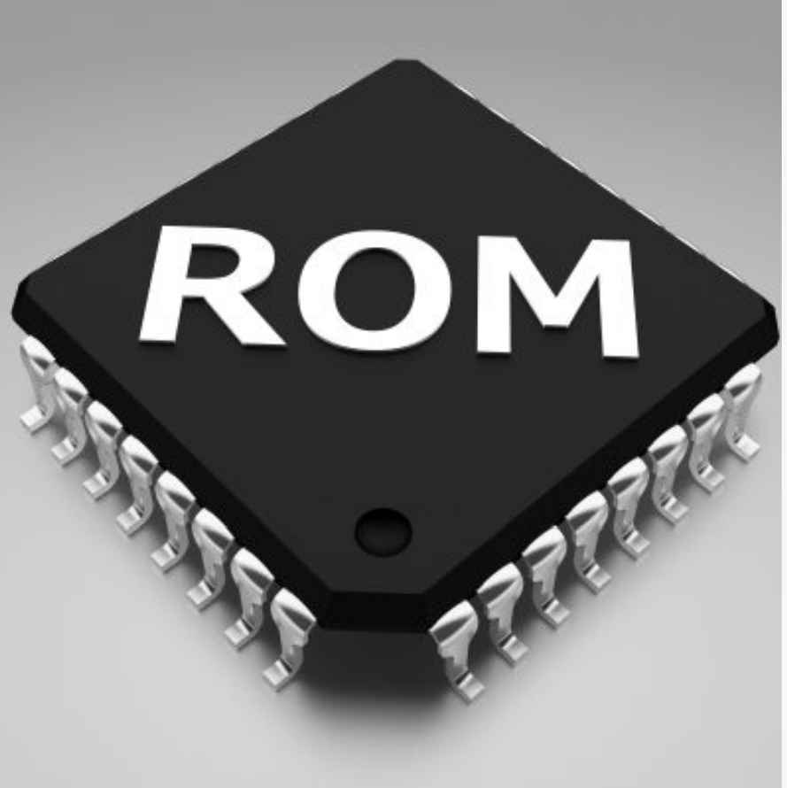

RAM

RAM (Random Access Memory) is the hardware in a computing device where the operating system (OS), application programs and data in current use are kept so they can be quickly reached by the device's processor. RAM is the main memory in a computer. It is much faster to read from and write to than other kinds of storage, such as a hard disk drive (HDD), solid-state drive (SSD) or optical drive. Random Access Memory is volatile. That means data is retained in RAM as long as the computer is on, but it is lost when the computer is turned off. When the computer is rebooted, the OS and other files are reloaded into RAM, usually from an HDD or SSD.
ROM
Read-only memory (ROM) is a type of non-volatile memory used in computers and other electronic devices. Data stored in ROM cannot be electronically modified after the manufacture of the memory device. Read-only memory is useful for storing software that is rarely changed during the life of the system, also known as firmware. Software applications (like video games) for programmable devices can be distributed as plug-in cartridges containing ROM.